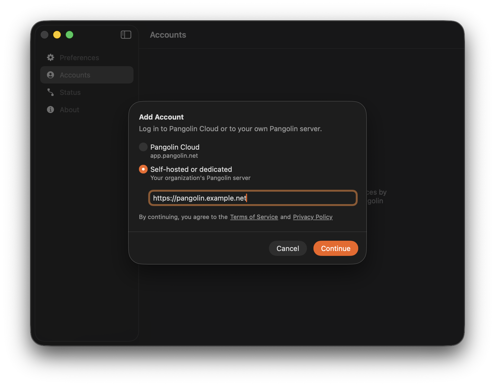
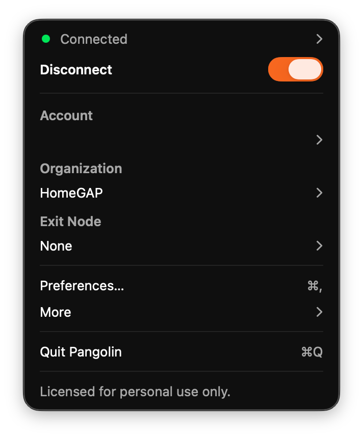

Connect the Pangolin apps¶
The Pangolin apps (by Fossorial) for Android, iOS and desktop connect to HomeGAP with no change, and so does the olm command line client. This page tells you which address to enter, how a device signs in, what the apps show and what the limits are.
HomeGAP answers the calls that these apps make to a self-hosted server. You install no other server.
Before you start¶
- The config has
sign_in.url, and the sign-in runs. See Sign-in. - The person has a HomeGAP user. See Users, machines and devices.
- The device trusts the certificate of the address. The certificate that HomeGAP orders for the nodes from Let's Encrypt meets this.
The address¶
The address for the apps is the value of sign_in.url, for example https://vpn.example.net. The Access page of the dashboard shows it in the App address panel, with a QR code for a phone.
Each node serves this address. Bunny DNS sends the device to a healthy node, so the address stays the same when a node fails.
Connect an app¶
- Install the Pangolin app for the platform: Android, iOS, macOS, Linux or Windows.
- In the app, add an account for a self-hosted server. In the macOS app, this is Add Account, then Self-hosted or dedicated.
-
Enter the address of the sign-in and click Continue.

-
The app shows a code and opens the sign-in page of HomeGAP in the browser.
- Compare the code on the page with the code in the app.
-
Sign in with the provider, or with the email address and the HomeGAP password.
-
The page Device approved opens the app again. If it does not, click Open the app.
-
Connect the app. The app shows Connected.

-
On the Access page, find the device in Devices. Make sure that it shows
online, with the node that it connects through.
For each page of the sign-in and its messages, see What a user sees.
Connect a machine with olm¶
olm is the command line client of the Pangolin apps. Use it for a server or another device with no person. A machine has no sign-in in a browser. It connects with an id and a secret.
-
Create the machine on the Access page with + Add machine, or run this command:
-
Keep the
idand thesecret. HomeGAP shows the secret only one time. -
Give
olmthe address of the sign-in, the id and the secret in these environment variables:Variable Value PANGOLIN_ENDPOINTThe address of the sign-in, for example https://vpn.example.net.OLM_IDThe id of the machine. OLM_SECRETThe secret of the machine. -
Start
olm. In a container, it needs theNET_ADMINcapability and the device/dev/net/tun: -
On the Access page, make sure that the machine shows
online.
The machine gets the private services of its roles, as a device of a user does. A machine cannot ask for the list of exits, because it has no session of a user.
olm has a local API, which reads its state and selects an exit. The variables ENABLE_API: "true" and HTTP_ADDR: 127.0.0.1:9452 enable it.
What the apps show¶
- The organization is HomeGAP. HomeGAP has one organization, so there is nothing to select.
- The status is Connected when the homelab answers the probe of the app inside the tunnel.
- Exit Node lists Exit via
for each node and Exit via homelab. The config must enable them, and a role of the user must permit them. See Exits and tunnel DNS. - If you block or delete the device, or block or remove its user, the app disconnects. It shows "Your access ended. Sign in again."
- After 30 days, the session ends, and the app asks the user to sign in again.
What a connected device reaches¶
- The private services that the roles of its user permit, by their hostnames. Only a connected device resolves and reaches these names. See Private services.
- The names that have a private path through the front door of the homelab. See Client addresses and private-only services.
- The internet through an exit, if the user selects one.
- The DNS servers of
vpn.tunnel_dns.
HomeGAP denies everything else. A device does not reach your home network, another device or the mesh.
DNS¶
The app answers the names of your private services itself. HomeGAP gives it the names and their addresses when the device connects.
The app also answers the public names of your services itself. A device connects through one node, and each public name that this node serves gets the address of this node. The traffic of the device for your services then stays on the node that carries its VPN, whatever public DNS answers. A name that only a different node serves, such as status-na1.example.net, gets the address of that node. A private name that the user can reach keeps its private address.
HomeGAP sends each change of these names to a connected app at once. A new service, a removed service or a new role needs no new connection. The app also keeps its tunnel when the sign-in restarts, for example during an upgrade.
A phone that sleeps ends its connection to the sign-in and keeps its tunnel. HomeGAP keeps the key of that tunnel for 7 days, so the tunnel works at once when the phone wakes. HomeGAP removes the key earlier when you disconnect in the app, or when the device or its user gets a block or goes.
For other names, HomeGAP gives the app the DNS servers of vpn.tunnel_dns.resolvers (default 8.8.8.8) and enables DNS through the tunnel. These values override the DNS settings of the app. The lookups then leave from your homelab. A user without a role of vpn.tunnel_dns.roles gets no DNS settings from HomeGAP.
Limits¶
- A node always relays the traffic. There is no direct path between a device and your home, and no hole punching.
- The tunnel carries IPv4 only.
- The start of a connection takes approximately one second longer than with a direct path. The app first tests the endpoint, gets no answer and then asks for the relay.
- A user needs a HomeGAP user with the same email address, also with an OpenID Connect provider.
- A HomeGAP password has no second factor. A second factor comes from the provider.
- A machine gets no list of exits.
- The harness of HomeGAP runs
olm1.10.1. The calls of the apps come from the source of the Android app 0.8.3.
With the homelab down¶
These points apply with vpn.exit_nodes.nodes: true. Without the exits of the nodes, the apps do not connect during the outage.
- A connected device loses the private services. If its roles permit it, it uses the exit of a node.
- A new device signs in at a node with a HomeGAP password and gets the exit of that node only.
- A machine connects with its id and secret and gets the exit of that node only.
- A device with a session of a node signs in again after the homelab returns.
If an app does not connect¶
| What you see | What to check |
|---|---|
| The app does not accept the address. | Open the address in a browser. It must have a valid certificate, and a node must answer. Check sign_in.url and the DNS records of the name. |
| "This code is not known, or it expired." | A code is valid for 10 minutes. Start the sign-in in the app again. |
| "This account has no access to HomeGAP. Ask your admin." | Add the user on the Access page, with the email address of the provider. With sign_in.oidc.group_roles, put the person in a group that gives a role. |
| The app signs in and does not show Connected. | The device must reach UDP port vpn.port (default 51830) of the node. Open it in the firewall of your server provider. |
| An exit of a node does not pass traffic. | The device must reach UDP port vpn.exit_port (default 51840) of the node. |
| A private name does not open. | Check the roles of the user and the homegap.roles label of the service. A service with no such label is for Admin only. |
For the logs of the sign-in, run docker compose logs homegap-sign-in on the homelab. See also Diagnostics and troubleshooting.